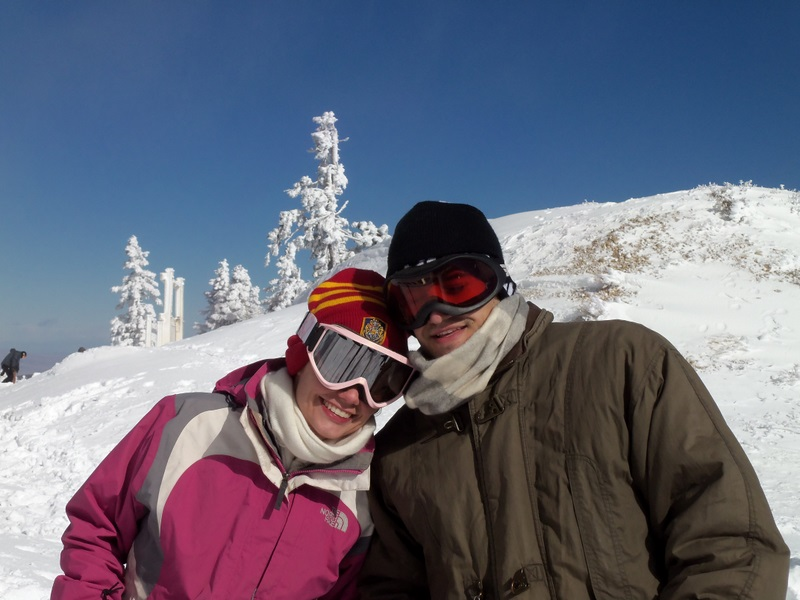
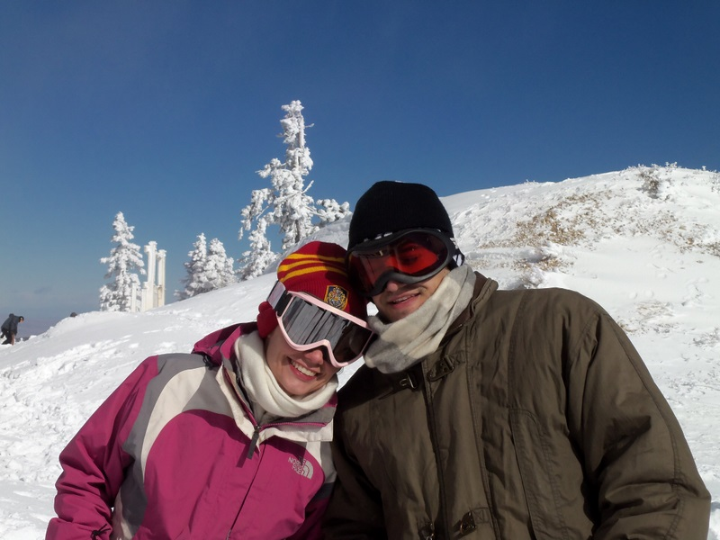

Maid of Honor: Sara Reisler
Sara is my best friend, and the only person in the world who I can
always count on for an honest opinion. I think she has told me I
was being stupid more than my mom, my roommates, or my future
husband. In most cases, she has been right, and I have greatly
benefited from her insights. I am so glad to have her by my side at
my wedding, and to know that she doesn’t think I am being stupid
this time.
Silke Behrends
I have known Silke for a very long time, and I am super thrilled
that she is making the trek from Germany to be in my wedding. I
cannot remember meeting Silke, but if I did I’m sure I would
remember an extremely confident, outgoing, super friendly baby
trying to help a shy, nerdy one come out of its shell. Thanks so
much to our parents for making sure we kept in touch before we
were old enough to know how important this would be, and thanks
to facebook, email, skype, and the like for making being friends
across an ocean super easy ever since then.
Martina Hayes
Somehow I have found a blurb about Martina to be very hard to
write. Martina is another one of my extremely lucky random
roommates. She responded to a Craigslist ad and managed not to
notice how loony we all are during our first meeting. She is
extremely difficult to capture in a few lines or prose. Thus:
Martina is strange,
reminiscent of myself.
we bake together.

Ashley McDonald
Ashley was the world’s best college roommate. We met on move-in
day hoping that a year with a complete stranger would be passable,
and have been great friends ever since. I got to be a part of
Ashley and her husband Ryan’s wedding just a couple of years ago,
and I always hoped to one day be as happy as she was on that day.
I also cannot wait to meet their baby boy, who should be appearing
sometime this summer. Ashley always told me that when you found the
right person you would just kind of know, and after years of
doubting her advice I finally believe her.

Kathryn Schumacher
As the only bridesmaid in Ann Arbor, Kathryn will be bearing the
brunt of this wedding planning burden. She is my roommate, my
office mate, and the center of our social life, so there is no
escape from my blabber about dresses and cakes and invitation
lists. So far, we are having a great deal of fun, though overall
productivity in 1773 IOE has definitely diminished.

Best Man: Billy Teeple
Billy is one of my oldest friends and a founding member of the Troy
Halo Organization. From soccer to wrestling to video game
tournaments, he has been a loyal friend. Despite uncontrollably
blurting “Go white” whenever he hears the words “Go green,” Billy
remains my best friend and best man.

Anish Gupta
Anish is my frat big bra, third year roommate, and 5 time puzzle
team co-captain. He has been known to make me go running at 6:30am,
teach kids math, and make sure my mother knows what good children
she has.

Chris Chambers
I’ve been friends with Chris since before elementary school. He
would usually let me be Indiana Jones while he assumed the less
glamorous role of Crocodile Dundee as we foraged through the
jungle-gym wilderness of his back yard.
Billy, Nick Best Nick and Billy are the two humans in the world with DNA most similar to mine. For 25 years they’ve tolerated me, covered for me, and toughened me up the best they could.

We first met at University of Michigan IOE PhD student recruiting weekend. Specifically, we were sitting in a hotel room with the other recruits and several current passionate PhD students who were trying to convince all of us to spend the next 4 (or 5, or 6) years in Ann Arbor pursuing doctoral degrees. We didn’t speak to each other much that day, but we did notice each other. Katharina was a bit sad when Christopher failed to participate in any of the events that were scheduled for new recruits. Little did she know, he had already spent four years in Ann Arbor and knew all the ins and outs. Luckily, both of us were accepted and met once again in the first year IOE PhD office. After months of nervous encounters, awkward gchat discussions, and strategically planned classroom seating proximity, we went to Buffalo Wild Wings for some hot (and romantic) wings, met some friends for The Imaginarium of Doctor Parnassus at the State Theater, and found our pinkie fingers carefully intertwined.
The ProposalFrom our first date at the State Theater, things progressed pretty quickly. After a few weeks, there were not many hours left in the day which we did not spend together. We had lunch, stayed late in the first-year PhD student office pretending to do work, and hung out on weekends. Katharina was relieved that she no longer had to host elaborate parties to get an excuse for Chris to come over, and Chris was happy that he no longer had to strategically position himself to be first in line to ride shotgun in Katharina’s car. Katharina met Chris’ parents (and entire extended family) at Easter, and she brought Chris home to meet her parents in May. Still, Katharina had no idea that Christopher was nearly as serious as she was, until he asked if he could see her UVA class ring and proceeded to wear it around for a week (Chris’ note: I sprinted to the jewelry store to measure the ring while Katharina was in the shower, but they weren’t open yet. I ended up guessing at the size). Exactly one year after our first movie date, we went back to Buffalo Wild Wings. The following Saturday, we went to a very nice dinner at Vinology downtown, followed by The Black Swan at the State Theater. Christopher didn’t pay attention to too much of the movie, which was probably good because it was not exactly uplifting (Chris’ note: in my defense, the only alternative was a movie which ends in a divorce). After the movie, Christopher stayed in his seat for an unusually long time, holding Katharina’s hand, and that’s when she knew what was coming. They both started getting teary-eyed as Chris explained how sure he was, and Katharina could barely wait for the punch line (Chris’ note: I don’t know if it’s a good or bad thing that my fiancee considers my proposal a punch line). We’ve never been so happy or so certain of anything, and we skipped through the streets of Ann Arbor. Some guy told us a story about how he’d run out of cash too far from a gas station, and we were so happy we just handed him twenty bucks. On the way home, we stopped at the Cottage Inn, where Chris’ family and some of our closest friends greeted us. Katharina’s poor parents had to find out via video skype after several hours of drinking, but they were still thrilled. Still, not nearly as thrilled as we were.
Note: One piece is yet to come. Look for it soon, or try to fill in the missing piece.


Ann Arbor is a fabulous town. Filled with excellent restaurants, great music venues, parks, museums, bodies of water, and students. Below is a list of some of our favorite places and activities, as well as some helpful hints that may help with your wedding attendance logistics. Can’t wait to have you here!
RestaurantsCafe Habana is one of our favorite restaurants downtown. Specializing in Cuban food and drinks, they also have an exciting lunch menu. The downstairs is a great place for late-night cocktails, though it can get crowded.
Zingerman’s is one of Ann Arbor’s foodie gems. This is a fantastic (though overpriced) deli that makes their own cheeses, breads, and meats and sells a variety of high quality products. The sandwiches are fantastic. Seating is next door at the Zingerman’s coffee house, which sells warm drinks and cakes. Across town is Zingerman’s Roadhouse, a more up-scale restaurant that serves full-size entrees.
The Northside Grill is our favorite breakfast place. Their specialty is probably their breakfast sandwiches, but even their plain old eggs are great. If you like root beer floats, try theirs. There is often a wait, but it is usually not too long. They also serve you free coffee while you wait.
Aut Bar is a vaguely Italian, gay-friendly restaurant and bar with absolutely awesome food. It has outdoor seating in a really cute little courtyard downtown, and is overall a very pleasant place to have a meal.
Grizzly Peak is (we think) the best of Ann Arbor’s several brewing companies. The food is quite good, and some of the beers are awesome. If you don’t know what you like, try a beer sampler or just let them you a small taste.
B.D.’s Mongolian Barbeque is simply fun to go to. Fill a bowl with raw meat, seafood, and veggies, and have one of the chefs cook it up in a variety of sauces on a hot stone. For just a few dollars extra, get the all-you-can-eat option and try all possible combinations.
The Blue Nile serves Ethiopian food, complete with straw tables and a good amount of spice. Their sampler platters are all-you-can-eat, so just pick your favorite dishes and they will keep bringing more. However, we have yet to manage to eat more than the first plate full.
I mention Buffalo Wild Wings only because this is where we had out first date. The wings are great (our favorites are the hot and spicy garlic varieties).
The Gandy Dancer is Ann Arbor’s fanciest restaurant. It is located in the old train station, so don’t freak out when the train rolls by halfway though the soup course. We have not actually eaten here, so let us know if you’re going and feel like inviting the bride and groom.
The Heidelberg is Ann Arbor’s token German restaurant. It has pretty mediocre food, but the beer selection is excellent, so stop in for a real Weissbier.
BarsIf you want to sit outside for a drink, you should go to Dominick’s. This tiny place has a lot of outdoor seating and very very good sangria served in old jam jars. Note that the place closes early since it is in a neighborhood.
Ashley’s is a fantastic beer bar, with an unbeatable selection. The atmostphere is also nice. Do watch out for crowds, but if you have a bit of patience you can almost surely get a seat.
Several other good bar choices are listed in the restaurant section, such as Cafe Habana and Heidelberg, so check these out as well.
Entertainment/Things to doThere are three main parts of downtown Ann Arbor, all of which are worth a walk around. State Street is the heart of student life, with a large number of bars, eateries, and shops usually filled with Michigan students. For a more grown-up feel, try walking down Main Street, which hosts more up-scale dining, bars, and music venues. Finally, there is the somewhat alternative Kerrytown (that’s where we live!). Of course it is also worth it to take a look at central campus of the University of Michigan, located just south-east of downtown.
If you are close enough to drive, you already know how to get here. If you are not, you should probably fly. Pretty much the only place you can get to via train is Chicago. The closest airport is Detroit (DTW). It is a big airport and a Delta hub. The airport is about half an hour from Ann Arbor, and there are several transportation options, such as Ann Arbor Yellow Cab and Michigan Flyer.
Hotels- Courtyard Ann Arbor, 3205 Boardwalk, Ann Arbor, Michigan 48108 USA, 1-734-995-5900, (Ley/Best), ~2.5 mi from wedding venue, ~$100/night
- Comfort Inn & Suites University South, 3501 S. State St., Ann Arbor, MI 48108 USA, 1-734-761-8838, (Group 537-090, Ley/Best), ~2.5 mi from wedding venue, ~$70-100/night
- Campus Inn, 615 E. Huron St., Ann Arbor, MI 48104 USA, 1-800-666-8693 (Group 5497--click on “Group Rates” and enter this number), ~0.5 mi from wedding venue, ~$180/night
We have five gift registries. The first four are traditional registries, and the fifth, “honeyfund” is a service through which you can donate money towards some of our future purchases as well as our honeymoon trip: